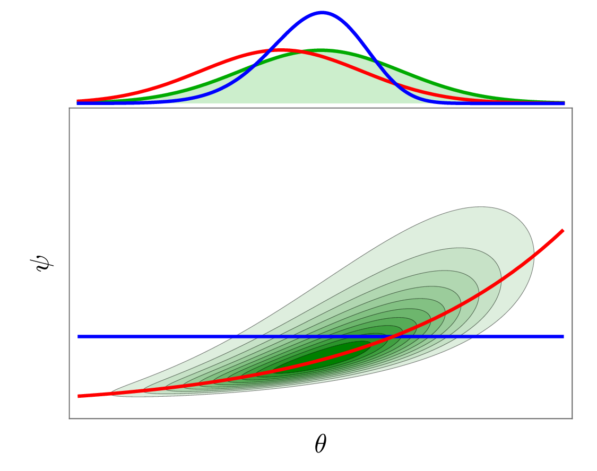

Loading...
Searching...
No Matches
CMP++: Scientific Uncertainty Quantification and Bayesian Calibration Library

Introduction
Welcome to the official API documentation for CMP++, a high-performance, template-driven C++ library specifically engineered for Uncertainty Quantification (UQ), Bayesian Calibration, and Machine Learning in complex scientific computing environments.
Architectural & Scientific Overview
Rather than solving a single model calibration equation, CMP++ implements a cohesive, modular ecosystem of algorithms that connect experimental data, high-fidelity simulators, statistical surrogate models, and global sensitivity evaluations:
- Bayesian Calibration with Discrepancy Modeling: Solves the general computer model calibration problem by integrating physical simulator runs with experimental observations. It accounts for simulator inaccuracies using non-parametric discrepancy modeling. The discrepancy function is represented as a Gaussian Process that learns systemic errors directly from the residuals of physical simulator predictions.
- Surrogate Modeling Pipeline: To accelerate computationally expensive physical model evaluations, CMP++ constructs either global or localized statistical surrogate models:
- Gaussian Processes (Kriging): Approximates smooth physical responses with robust posterior confidence bounds and statistical variance envelopes.
- Polynomial Chaos Expansion (PCE): Projects stochastic responses onto orthogonal polynomial bases (Hermite, Legendre, Chebyshev, Laguerre) using regression or spectral quadrature.
- Localized Mixtures (Model Clustering): Partitions the design space using K-Means or Dirichlet Process Mixture Models (DPMM) and blends local GP/PCE models through probabilistic weights.
- Global Sensitivity Analysis: Decomposes total simulator variance into main and joint parameter interactions. CMP++ calculates Saltelli-Sobol sensitivity indices to determine which input parameters dominate output variance and which parameter interactions are negligible.
- MCMC & HMC/NUTS Bayesian Inference: Performs posterior parameter sampling using adaptive step sizing, delayed rejection, and Hamiltonian dynamics. It offers both classical Metropolis-Hastings (DRAM) and state-of-the-art Hamiltonian Monte Carlo using the No-U-Turn Sampler (NUTS) with dual-averaging adaptation.
Architectural Components & Component Mapping
Surrogate Modeling & Dimensionality Reduction
- Gaussian Process Regression: GaussianProcess - Non-parametric Bayesian regression modeling that provides predictive distributions, prior mean functions, and kernel covariances.
- Multi-Output GP: MultiOutputGaussianProcess - Independent Gaussian Processes designed for multi-column output dimensions.
- Polynomial Chaos Expansion: PolynomialExpansion - Spectral projection representing stochastic models via orthonormal polynomials.
- Clustered Local GP: ModelCluster - Localized Gaussian Process surrogates blended via classifier posterior probabilities.
- Clustered Local PCE: ModelClusterPoly - Localized Polynomial Chaos Expansions blended via classifier posterior probabilities.
- Principal Component Analysis: PCA - Covariance eigen-decomposition to map high-dimensional datasets to lower-dimensional latent spaces.
Sensitivity Analysis
- Saltelli Sobol Indices: SobolSaltelli - Variance decomposition scheme to evaluate first, second, and total order Sobol sensitivity indices.
Sampling & Inference Methods
- Markov Chain Monte Carlo: MarkovChain - Metropolis-Hastings chain simulation implementing Delayed Rejection Adaptive Metropolis (DRAM).
- Evolutionary MCMC: EvolutionaryMarkovChain - Multi-chain MCMC utilizing differential evolution crossover and mutations.
- Hamiltonian Monte Carlo: HamiltonianMarkovChain - HMC sampler utilizing the No-U-Turn Sampler (NUTS) algorithm and dual-averaging step-size adaptation.
Probability Distributions, Priors, & Kernels
- CRTP Univariate Distribution: UnivariateDistribution - CRTP base class representing continuous 1D probability density functions.
- CRTP Multivariate Distribution: MultivariateDistribution - CRTP base class representing joint continuous multi-dimensional probability density functions.
- Prior Distributions: Prior - Interface for prior probability densities supporting joint product, uniform, and distribution-mapped priors.
- Covariance Kernels: Covariance - Interface for GP kernels (SquaredExponential, Matern52, Matern, WhiteNoise, Sum, Product).
- GP Mean Functions: Mean - Interface for GP prior mean functions (Constant, Zero).
- Density Kernels: Kernel - Evaluates local smoothing kernels (Gaussian, Epanechnikov, Uniform) for density estimations.
- Density Bandwidths: Bandwidth - Computes matrix transformations (Isotropic, Diagonal, Full) scaling multivariate distances in KDEs.
Classifiers
- Classifier Base: Classifier - Common interface defining discrete classification and class probability estimation.
- Support Vector Classifier: SVM - Classifier constructing optimal separating hyperplanes via LIBSVM with custom kernels.
- Kernel Density Classifier: KDE - Non-parametric Bayes classifier estimating class densities using Kernel Density Estimation.
- K-Nearest Neighbors: KNN - Neighborhood helper model identifying adjacent points in design space.
- Baseline Classifier: Dummy - Simple classifier predicting classes based on empirical training frequencies.
Clustering Methods
- Dirichlet Process Mixture Model: DirichletProcessMixtureModel - Infinite Gaussian Mixture Model clustering using collapsed Gibbs sampling.
- Geometric Clustering: GeometricCluster - K-means clustering partitioning sample points to minimize within-cluster sum of squares.
- Uniform Random Clustering: DummyCluster - Baseline clusterer assigning points to partitions uniformly at random.
Core Utilities & Integration
- 1D Quadrature: Quadrature1D - Generates quadrature weights and nodes using the Golub-Welsch symmetric tridiagonal eigenvalue algorithm.
- Tensor Integration: TensorIntegrator - Multi-dimensional integration using tensor-product quadrature rules mapped to canonical/physical domains.
- K-Fold CV Partitioning: KFold - Partitions datasets into training/testing folds for parameter cross-validation.
- Bootstrap Resampling: Bootstrap - Resamples datasets with or without replacement to evaluate bootstrap estimator variance.
- Wasserstein Distances: wasserstein1D and slicedWassersteinDistance - Evaluates optimal transport distances between distributions.
- Finite Differences: fd_gradient and fd_hessian - Central difference stencils to approximate objective function gradients and Hessians.
- IO Serialization: read_vector and write_vector - Text file streaming and CSV data reading/writing utilities.
File Organization & Source Headers
- Surrogates:
- gp.h - Main Gaussian Process regression.
- multi_gp.h - Independent multi-output GPs.
- poly.h - PCE expansion surrogates.
- model_cluster.h - Clustered local GP mixtures.
- model_cluster_poly.h - Clustered local PCE mixtures.
- Samplers & Optimization:
- mcmc.h - DRAM and Evolutionary MCMC.
- hmc.h - Hamiltonian Monte Carlo (NUTS).
- optimization.h - NLopt optimization wrappers.
- Probability & Math:
- distribution.h - Probability distributions.
- prior++.h - Joint prior distributions.
- covariance.h - Kernel covariance functions.
- mean++.h - GP prior mean functions.
- kernel++.h - KDE kernels and bandwidths.
- kde.h - Kernel Density Estimation models.
- integrator.h - Quadrature rules and tensor integration.
- Sensitivity, Statistics & Utilities:
- sobol.h - Saltelli-Sobol sensitivity index calculator.
- statistics.h - K-Fold, Bootstrap, and correlation.
- wasserstein.h - Sliced Wasserstein distances.
- finite_diff.h - Numerical gradient and Hessian stencils.
- classifier.h - KDE, SVM, and Dummy classifiers.
- cluster.h - K-means and Dirichlet Process Mixture Model clustering.
- io.h - File read/write serialization helpers.
- cmp_defines.h - Global templates and LDLT utility functions.
Verification & Testing Suite
Access these files in /tests to see exact usage examples:
- tests/distribution.cpp: Bivariate sampling and Sliced-Wasserstein verification.
- tests/mcmc.cpp: DRAM sampling on bimodal targets.
- tests/gp.cpp: GP training and cross-validation verification.
- tests/multi_gp.cpp: Dimensionality reduction using PCA followed by multi-output GP fitting.
- tests/sobol.cpp: Sobol sensitivity analysis on the Ishigami function.
- tests/calibration.cpp: Full model calibration with discrepancy GP.
Funding & Acknowledgement
This project has received funding from the European Union’s Horizon Europe research and innovation programme under the Marie Skłodowska-Curie grant agreement No 101072551 (TRACES).